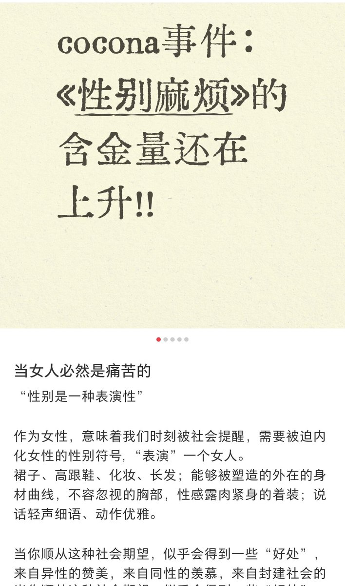
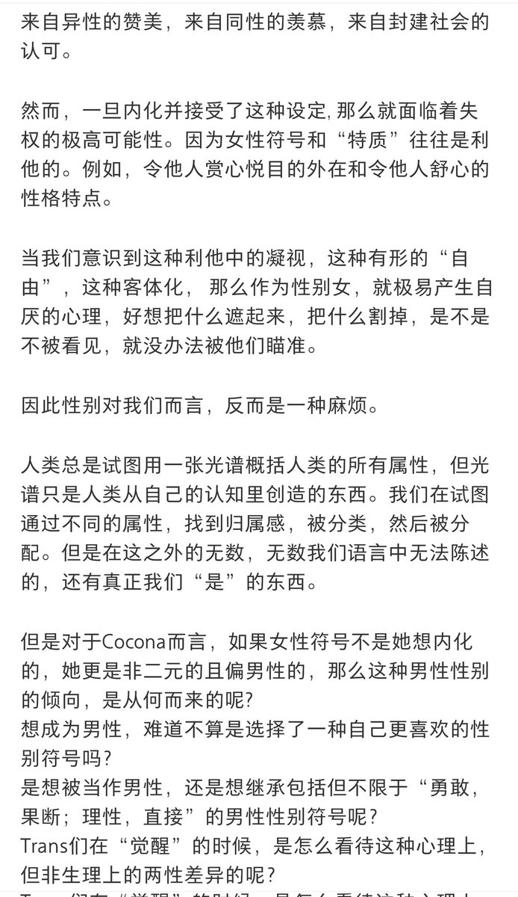

時璃風医詩🌈🏳️🌈
@hagishigure
一個伊利加雷就能批判所有簡中激女。
从倫理學角度講，這是把承認他者外在不可知的謙卑subaltren化為一種對他者匱乏的表現的利他性將愛与倫理本身具有的創生性和流動性，原初內在他異性的一種本真的慾望流動產生母性抹除，使其同一化為菲勒斯中心的subaltren。


魏淑淑淑芬芬芬
@Nevernessian
所以说你简中激女大部分“女权阅读”be like：↓
巴特勒：性别是表演性的
简中激女：好的，不演了
咱就是说读不懂可以不读💧 https://t.co/zKJTSqrLnk